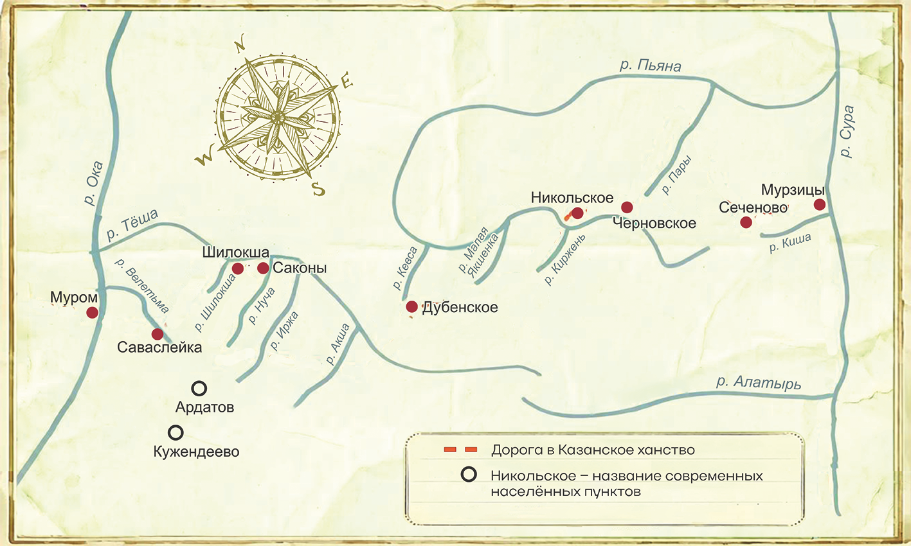

Поход на Казань — 1552 год
интерактивная историческая реконструкция
Путь царского войска
Ход похода

×
Ход похода
‹ Назад
Далее ›
движущийся пунктир
— царский путь ·
золото
— ключевые точки ·
фиолетовый
— Кужендеево / проводник
−
1:1
+